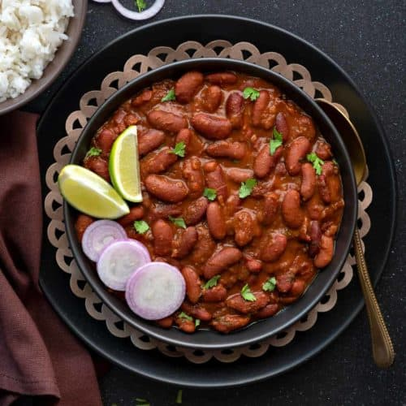

Rajma

Description
A delicious red kidney beans curry cooked in onions, tomatoes and basic spices.
Ingredients
- Red Kidney Beans
- Tomatoes
- Onions
- Ginger-Garlic Paste
- Corriander Leaves
- Spices
- Salt to taste
- Boil Red Kidney Beans.
- Chop up Onions and Tomatoes.
- Heat up oil in a cooker and saute the chopped onions and tomatoes.
- Once done now add Spices and Salt in the cooker.
- Now add water to the cooker and add the boiled Kidney Beans to it. Close the pressure cooker lid.
- Cook until 3 Whistles.
- Now server hot with garnishing and Enjoy your meal :).